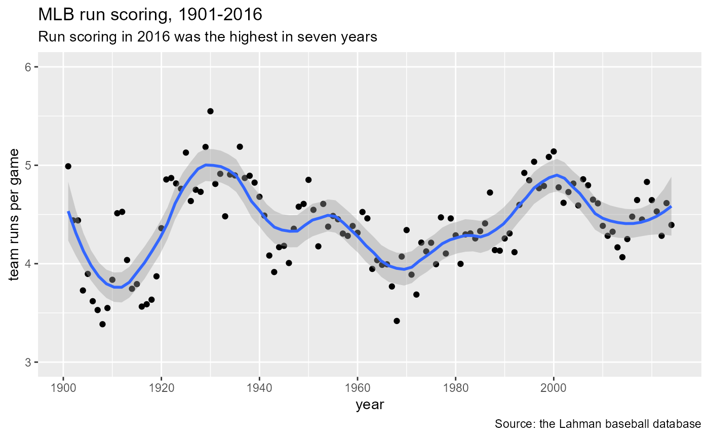

Run Scoring Trends
Martin Monkman
2024-09-29
Source:vignettes/run-scoring-trends.Rmd
run-scoring-trends.RmdRun scoring trends: Sub-titles and captions with ggplot2
This vignette demonstrates how to create a plot (using
ggplot2) showing Major League Baseball runscoring trends
since the 1901 season.
First, we load the necessary packages: Lahman
(containing the baseball data), ggplot2 to create the
plots, and the data carpentry package dplyr (note that
ggplot2 and dplyr are included in the
tidyverse package):
Read and summarize the data
For this example, we’ll use the data table Teams in the
Lahman database.
Once it’s loaded, the data are filtered and summarized using dplyr.
filters from 1901 (the establishment of the American League) to the most recent year,
filters out (using
!=) the Federal Leagueafter grouping by the year, summarizes the total number of runs scored, runs allowed, and games played
finally, calculates the league runs (
leagueRPG) and runs allowed (leagueRAPG) per game
A basic plot
You may have heard that run scoring in Major League Baseball has been down in recent years–or is it going back up? This is a perfect opportunity to visualize the date; what can we see in a plot?
For the first version of the plot, we’ll make a basic X-Y plot, where
the X axis has the years and the Y axis has the average number of runs
scored. With ggplot2, it’s easy to add a trend line (using
the geom_smooth option).
The scale_x_continuous options set the limits and breaks
of the axes.
MLBRPGplot <- ggplot(MLB_RPG, aes(x=yearID, y=leagueRPG)) +
geom_point() +
geom_smooth(span = 0.25) +
scale_x_continuous(breaks = seq(1900, 2015, by = 20)) +
scale_y_continuous(limits = c(3, 6), breaks = seq(3, 6, by = 1))
MLBRPGplotThe way we would set the title, along with X and Y axis labels, would be something like this.
MLBRPGplot +
ggtitle("MLB run scoring, 1901-2016") +
theme(plot.title = element_text(hjust=0, size=16)) +
xlab("year") +
ylab("team runs per game")Adding a subtitle: the function
So now we have a nice looking dot plot showing the average number of runs scored per game for the years 1901-2016. (The 2016 data is the most recent that has been added to the database.)
But a popular feature of charts–particularly in magazines–is a subtitle that has a summary of what the chart shows and/or what the author wants to emphasize.
In this case, we could legitimately say something like any of the following:
The peak of run scoring in the 2000 season has been followed by a steady drop
Teams scored 20% fewer runs in 2016 than in 2000
Team run scoring has fallen to just over 4 runs per game from the 2000 peak of 5 runs
Run scoring has been falling for 15 years, reversing a 30 year upward trend
I like this last one, drawing attention not only to the recent decline but also the longer trend that started with the low-scoring environment of 1968.
How can we add a subtitle to our chart that does that, as well as a
caption that acknowledges the source of the data? The new
labs function, available starting with ggplot2
version 2.2.0, lets us do that.
Note that labs contains the title, subtitle, caption, as
well as the X and Y axis labels.
MLBRPGplot +
labs(title = "MLB run scoring, 1901-2016",
subtitle = "Run scoring in 2016 was the highest in seven years",
caption = "Source: the Lahman baseball database",
x = "year", y = "team runs per game") 
Easy.
For more information about the labs function in
ggplot2, the “Modify axis,
legend, and plot labels” reference page within the ggplot2 site,
part of the Tidyverse.
This vignette is an update of the blog posts: